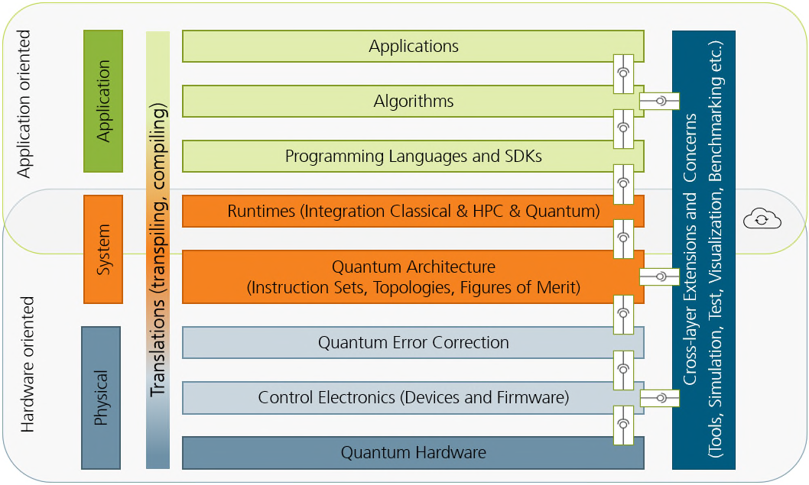

Scenario-Based Analysis
Scenario-based analysis is an architecture evaluation method from classical software engineering 1. It uses concrete usage scenarios for the system under design to verify whether the architecture can hold up to the requirements of its use cases.
Methodology
In FullStaQD, we use this method to guide the design of our reference architecture. At the current stage of the reference architecture, the scenario-based analysis focuses on the building block and runtime view. An extension to include the deployment view is planned for the future. Additionally, we document the scenarios for other software architects to use them in the evaluation of their own quantum software architecture instantiations, and for ourselves to evaluate architectural decisions in future versions of our reference architecture.
In order to use the scenario-based analysis, we evaluate the Proto-Stack which was designed in the QCNext project3, a predecessor of the FullStaQD project. The Proto-Stack is visualized below:

Our set of scenarios was originally inspired by Carbonelli et al.'s work which presented three industrial usage scenarios for quantum computing. We have since adjusted our scenarios with the goal of covering a representative set 2. Our analysis currently covers the following scenarios:
- Quantum Simulation for Material Science, Chemistry and Physics
- Quantum Cloud Services for Optimisation Problems
- Collision Detection using Quantum Machine Learning
To provide better orientation and clarify the relationships between individual software components, each component in the scenarios was retrospectively assigned to its corresponding building block of the Building Block View.
Conclusions of the Scenario-based Analysis
Our reference architecture is significantly influenced by the findings of the scenario-based analysis, with its key implications referenced in several architectural views, including the Runtime View, Building Block View, or in the Cross-Cutting Concepts. The most important conclusions of the scenario-based analysis are outlined below.
Evaluation of the Layer Model
We use the scenario-based analysis on the Proto-Stack to analyse the three-layered architecture model. We find that a three-layered architecture allows a clear separation of concerns between software components. This separation enables key architectural quality requirements, such as modularity and interchangeability to be satisfied. It also shows that a three-layered structure consisting of an application, system and physical layer provides a sufficient basis for separating the responsibilities of software components, as well as their required associated knowledge, as discussed in more detail in the Building Block View. A more granular structure with sublayers, as the Proto-Stack has, restricts the development of a software system too much and does not facilitate the realisation of the quality requirements.
Additionally, our scenario-based analysis shows that the Cross-layer Extension and Concerns of the Proto-Stack does not allow a clear separation of concerns for software components, which for example facilitate fault tolerance. Depending on the functionality of the software components, they may extend across multiple layers or may not belong to any specific layer at all. We classify these software components as part of the Cross-Cutting Concepts, which also includes software components which are used for monitoring, benchmarking and resource estimation. While the Proto-Stack addresses them through an additional component outside of the layer model, which may be suitable in some cases, our scenario-based analysis shows that they mostly need to be integrated into the relevant layers.
Evaluation of the Interface between the Application and System Layer
In our scenario-based analysis, we use quantum circuit as interface between the Application and System Layer. This means the Application Layer provides a quantum circuit, which is subsequently transpiled by the System Layer and executed on the quantum hardware through the Physical Layer. However, a quantum circuit alone may not provide all the information required by the different layers of the architecture. In this reference architecture, we define the program interface, which includes additional necessary information for the execution of the quantum system. This includes, for example, the configuration of fault tolerance methods, specifying which fault tolerance methods should be applied to ensure reliable execution and how the system should handle potential failures during runtime. Furthermore, the interface can define compilation requirements and program optimization strategies, such as selecting specific compiler settings or optimization levels for the underlying hardware. In addition, it can contain deployment specifications that determine how the quantum system is distributed across the available computing infrastructure, such as HPC. Further details on the program interface are provided in the Building Block View.
Evaluation of the Interface between the System and Physical Layer
In the scenario-based analysis, we evaluate what kind of information should be exchanged between the System and Physical Layer. We find that the interface between the System Layer and the Physical Layer must exchange three types of information. First, the System Layer must be able to provide a set of commands supported by the firmware to execute the quantum circuit on the quantum hardware. Second, it needs to receive the results produced by the quantum hardware. Third, information about the hardware's properties and capabilities is required in advance to enable the System Layer to transpile the program for the target quantum hardware.
Within the quantum computing ecosystem, several solutions already exist to facilitate this type of communication between the System Layer and the Physical Layer. We refer to these solutions as Common Quantum Device Interfaces, such as the Quantum Device Management Interface (QDMI) and the Quantum Resource Management Interface (QRMI). A more detailed description of the communication and interaction of the System and Physical Layer is provided in the Runtime View.
-
R. Kazman, G. Abowd, L. Bass and P. Clements Scenario-based analysis of software architecture IEEE software 13.6 (1996) ↩
-
Quantum Technology and Application Consortium–QUTAC et al. Industry quantum computing applications EPJ Quantum Technology 8.1 (2021) ↩
-
QC Next – Development of a modular software stack for the commercial application of quantum computing: innovation concept (2025) ↩